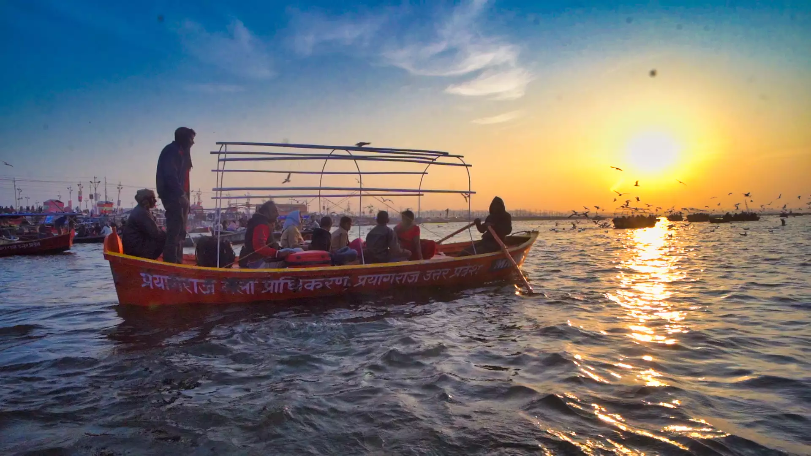

Upcoming Events

Shahi Snan
Royal Bath Ceremony

Cultural Programs
Traditional Performances

Spiritual Discourses
Enlightening Sessions
The World's Largest Spiritual Gathering
Mahakumbh is the largest religious gathering in the world, where millions of devotees come together to take a holy dip in the sacred rivers. This divine event occurs every 12 years and is a celebration of faith, spirituality, and Indian culture.
Royal Bath Ceremony
Traditional Performances
Enlightening Sessions
Prayagraj (Allahabad), Uttar Pradesh, India
Main Venue: Sangam (Confluence of Ganga, Yamuna, and Saraswati rivers)
January 14 - March 4, 2025
Main Bathing Dates:
Mahakumbh is the largest religious gathering in the world, where millions of devotees come together to take a holy dip in the sacred rivers. It is believed that bathing in the holy waters during this time washes away sins and brings salvation.
Mahakumbh occurs every 12 years, rotating between four locations: Prayagraj, Haridwar, Nashik, and Ujjain. The next Mahakumbh in Prayagraj will be in 2025.
The main bathing dates include Makar Sankranti, Paush Purnima, Mauni Amavasya, Basant Panchami, Maghi Purnima, and Maha Shivratri. These dates are considered the most auspicious for taking the holy dip.
The government provides various facilities including temporary accommodation, medical services, security, transportation, and sanitation facilities. There are also information centers and help desks for visitors.
Essential items include valid ID proof, warm clothing, personal medicines, toiletries, and a first-aid kit. It's also recommended to carry a water bottle and some dry snacks.